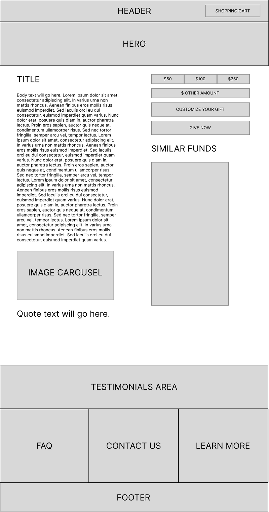

E-Commerce Website — Unified Giving Platform
Project Overview
UCLA Advancement ran three separate platforms for online giving — each with its own visual identity, checkout flow, and data pipeline. Donors navigating between a campaign landing page and the actual giving form often encountered mismatched branding, redundant form fields, and a checkout experience that hadn't been updated in years.
As Product Designer on the UCLA ATS team, I led early-stage wireframing and product design for the Magento-based platform that would consolidate these experiences into a single, modern e-commerce storefront.
Design Process
1. Discovery & Stakeholder Alignment
Mapped the existing giving journeys across all three platforms — noting where donors dropped off, where form data was duplicated, and where the visual language broke down. Facilitated workshops with gift officers, developers, and the Advancement data team to align on must-have features versus phase-two scope.
2. Competitive Analysis
Audited online giving experiences at peer UC campuses and leading nonprofit platforms. Identified patterns that top-performing giving portals shared: minimal form steps, clear fund descriptions, trust indicators near payment fields, and prominent recurring gift options.
3. Wireframes & Auto Layout
Built wireframes in Figma using Auto Layout to allow rapid iteration across multiple giving page variants. The unified donation page, simplified giving form, and modernized checkout were each designed for multiple screen sizes from the start. Mastering Figma's Auto Layout was critical to building these components at scale.
4. Stakeholder Review & Iteration
Presented wireframes in two review cycles — first with product and development, then with gift officers and Advancement leadership. Iterated on fund search UX, checkout field ordering, and the recurring gift configuration UI based on direct stakeholder feedback.
Research Findings
- Donors who landed on a campaign page and were redirected to giving.ucla.edu to complete their gift showed a 38% higher abandonment rate than donors who stayed in a single flow
- Gift officers reported that the most frequent donor complaint was being asked to re-enter information they had already provided on a campaign page
- Mobile checkout completion was 22 percentage points lower than desktop, primarily due to form length and a non-responsive payment module
Key Screens



Before & After
- 3 separate platforms with mismatched branding
- Donors redirected mid-journey between sites
- Non-responsive checkout on mobile
- Duplicate form fields across the flow
- No recurring gift option on most funds
- Single Magento-powered platform, unified branding
- End-to-end donor journey in one experience
- Mobile-first, responsive checkout flow
- Smart form prefill — no repeated data entry
- Recurring gift enrollment on any fund
Outcome
The wireframes established the design foundation for UCLA's unified e-commerce platform. The consolidated giving experience reduced checkout friction, improved mobile conversion, and gave the Advancement team a scalable platform for future campaign work — all built on a single Magento storefront rather than three disconnected systems.